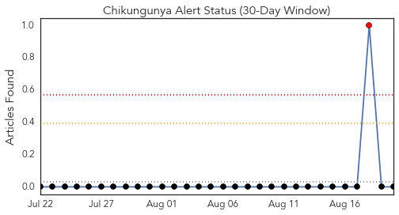
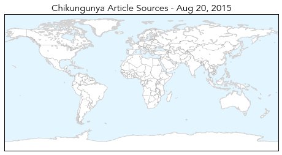
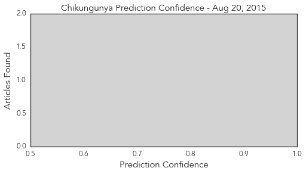
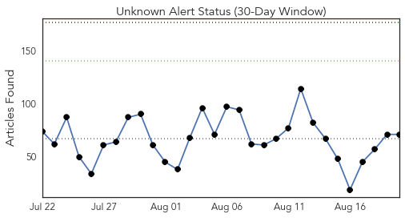
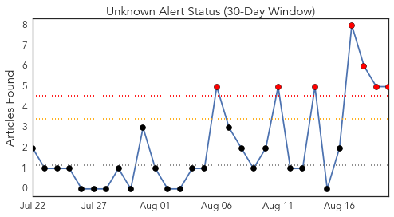
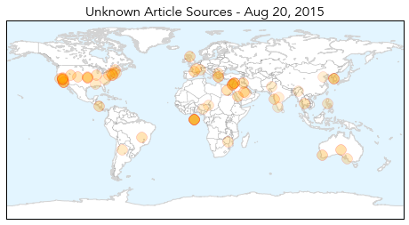
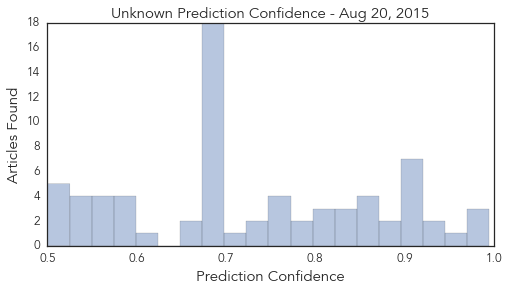

Chikungunya
30-Day Web Trend
1 alerts, 0 warnings

30-Day Twitter Trend
1 alerts, 0 warnings

Article Locations
Article Confidences
Top Articles:
-
No articles found for Aug 20, 2015
Top Tweets:
-
No tweets found for Aug 20, 2015
Unknown
30-Day Web Trend
0 alerts, 0 warnings

30-Day Twitter Trend
7 alerts, 0 warnings

Article Locations
Article Confidences
Top Articles:
- 0.995
- What lessons S.Korea learn from MERS outbreak
- 0.979
- Warning from health service
- 0.976
- KBS World Radio
- 0.967
- Saudi Arabia closes emergency ward as MERS infections soar before Hajj
- 0.937
- Flu miracle for WA patients
- 0.923
- Inverness parents urged to protect kids by handing in flu forms
- 0.917
- Chicago Tribune
- 0.917
- Chicago Tribune
- 0.917
- Chicago Tribune
- 0.917
- Chicago Tribune
- 0.917
- Chicago Tribune
- 0.917
- Chicago Tribune
- 0.902
- Health Officials Investigate Second Case Of Plague In California
- 0.887
- Plague Spreading Fast in the US
- 0.873
- NYC Legionnaires' disease death toll rises
- 0.866
- Brazil's lower house speaker Cunha charged in corruption probe
- 0.858
- Officials investigate case of plague in Georgia
- 0.856
- Lyme disease: Federal MP calls for greater recognition of tick-borne illness affecting 'thousands'
- 0.850
- Contrary to BMC’s claims, lab reports hantavirus cases in Mumbai
- 0.843
- Pasadena Hospital Tied To Another Outbreak From Tainted Scopes « CBS Los Angeles
- 0.831
- News Scan for Aug 19, 2015
- 0.823
- Residence had several confirmed cases of hot tub lung
- 0.817
- New study: San Francisco Bay Area Ticks Carry Diverse Infections
- 0.805
- Bland Houses Had Legionnaire’s Outbreak
- 0.801
- Officials investigate case of plague in Georgia
- 0.788
- IDNR Biologists Asking for Help in Tracking Fatal Deer Disease Outdoor News Daily
- 0.774
- Two tourists may have contracted the plague at Yosemite National Park
- 0.772
- Second Case of Human Plague Confirmed in Yosemite
- 0.769
- Patients in LA-area Hospital Detected with ‘Superbug’
- 0.764
- Health officials investigating second case of human plague in California
- 0.756
- Another Yosemite Visitor May Have Plague
- 0.735
- Duck! Researchers show vomiting can send viruses airborne
- 0.734
- California hospital investigates scope-related superbug infection outbreak
- 0.720
- Winter illnesses cause hospital gridlock, ramping
- 0.697
- Foot and mouth disease under control: Zhanda
- 0.694
- Georgia tourist is second suspected case of the plague in a month at Yosemite
- 0.690
- The Caledonian-Record
- 0.689
- Cryptosporidiosis reported in Johnson County
- 0.687
- France and Britain to sign Calais security agreement
- 0.686
- Whirling disease threatens mountain trout fisheries
- 0.683
- Georgia tourist with possible case of plague expected to recover
- 0.681
- Opera House Hotel confirmed as source of Legionnaires' disease outbreak, NYC health commissioner says
- 0.679
- South Korea declares end to MERS outbreak
- 0.679
- FOX5 San Diego – San Diego news, weather, traffic, sports from KSWB
- 0.677
- Pope Francis photographed with sign urging Falklands dialogue
- 0.677
- Palestinian ends hunger strike after court 'suspends' detention
- 0.677
- North and South Korea ‘exchange fire at border’
- 0.677
- Macedonia declares state of emergency over refugee crisis
- 0.677
- Israel strikes Syria after rocket attack on northern village
- 0.677
- France and UK sign Calais cooperation agreement
Showing top 50 articles...
Top Tweets:
- 0.896
- Quiero contarles acerca de un mito. El mito involucra dioses que crean a un hombre, quien vive desnudo en la naturaleza. (1/6)
- 0.874
- Todo esto es un mito de la Épica de Gilgamesh, escrito en el 2,100a. C., varios siglos antes de que se comenzara a escribir la Biblia. (6/6)
- 0.691
- y lo ordenan a que construya una arca. El hombre puede montar varios humanos y un escogido de animales. La inundación llega y (4/6)
- 0.529
- EID: Mortality Risk Factors for Middle East Respiratory Syndrome Outbreak, South Korea, 2015 MERS http://t.co/Om9mhXW5ak
- 0.500
- sumerge todo… Todas las demás personas mueren… El arca aterriza en una montaña del Oriente Medio… Ya van entendiendo la idea. (5/6)